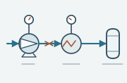
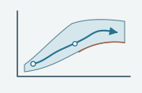
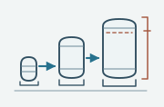

BOP and utility systems
We study how compression and pumping power, heat transfer and storage capacity limit production.
A reactor or separator alone tells us little about plant output. We model compression, heat exchange and recycle alongside the core process to determine what equipment the plant needs and where it can operate.

We study how compression and pumping power, heat transfer and storage capacity limit production.

We compare recycle layouts and heat-recovery options to see how they affect efficiency and utility demand.

We account for load ramps, thermal inertia and recycle delays to find operating limits.

We examine equipment specifications and design margins, and identify conditions that need demonstration before scale-up.
We start with measured reaction rates and separation performance, along with validated reactor models.
We connect compressors, pumps, heat exchangers and utilities to the process. Engineering data tell us which flows and loads each unit can handle.
We compare equipment specifications and operating strategies, including cost and life-cycle impacts when they affect the choice.
As throughput rises, we check which limit is reached first: compressor flow, pumping capacity, heat transfer or utility supply.
Process flow diagrams and material and energy balances let us compare output and energy demand before and after integration.
We examine startup, shutdown, part-load operation and changes in feed or energy supply to estimate minimum load and buffer capacity.
We run simpler and more detailed equipment models under the same conditions, then examine which design choices change and how uncertain they are.
Kinetics, separation performance and reactor models
Equipment curves and utility limits
Process flowsheets and material and energy balances
Temperature, flow and recycle response to load changes
Design specifications, operating ranges and test conditions
We connect synthesis, downstream upgrading and recycle in a plant model and use demonstration design data to compare equipment capacity and utility requirements.
Using plant flowsheets and balances, we study how compressor, recycle and thermal constraints shape steady-state and dynamic operating ranges.
We compare plant operating data with dynamic models to study process response as operating conditions change.